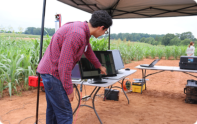
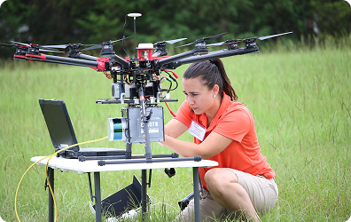
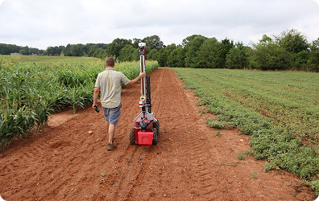

개념 학습
지속가능발전목표(SDGs) 관련 문제 탐색
식량 안보 목표와 인공지능을 활용한 해결 방법
흉년이 잦아 곡식의 수확량이 줄고 있는 개발 도상국의 식량 문제를 해결하는 데 기계학습을 활용한 카네기 멜론 대학교의 프로젝트를 살펴보자.
카네기 멜론 대학교의 팜뷰(FarmView) 프로젝트
데이터를 수집하고 기계학습으로 데이터를 분석하여 수확량을 늘리는 특성이 무엇인지를 파악한다. 이 프로젝트는 개발 도상국의 주요 식량 작물 재배를 확대하기 위한 연구이다. 특히 기근이 잦은 지역에서도 작물이 번성할 수 있도록 가뭄과 열에 강한 곡식인 수수의 수확량을 늘리는 것이 목표이다.


